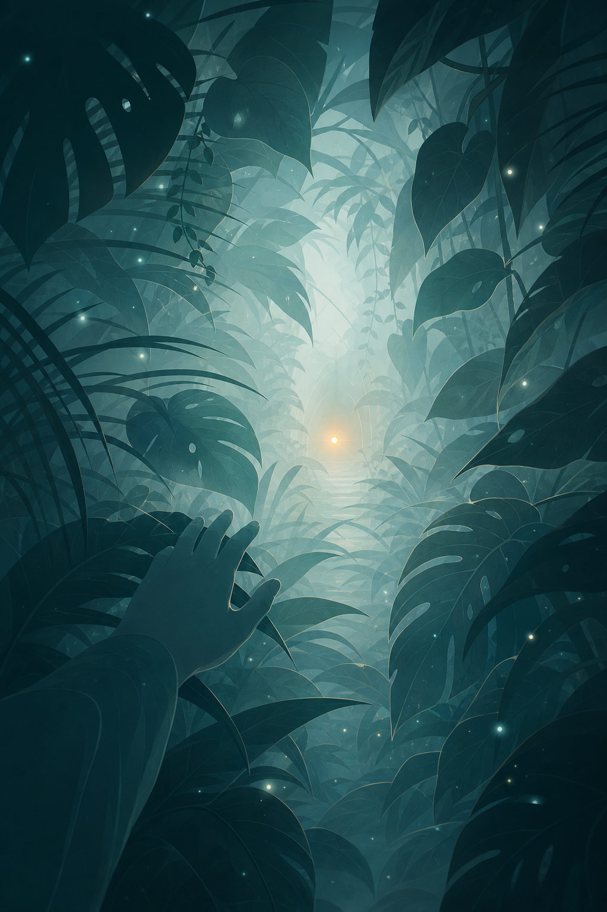
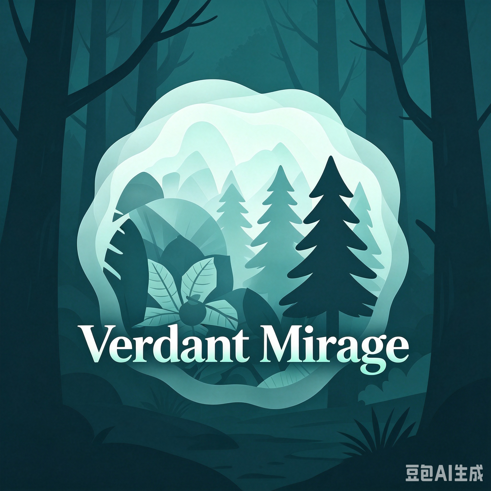
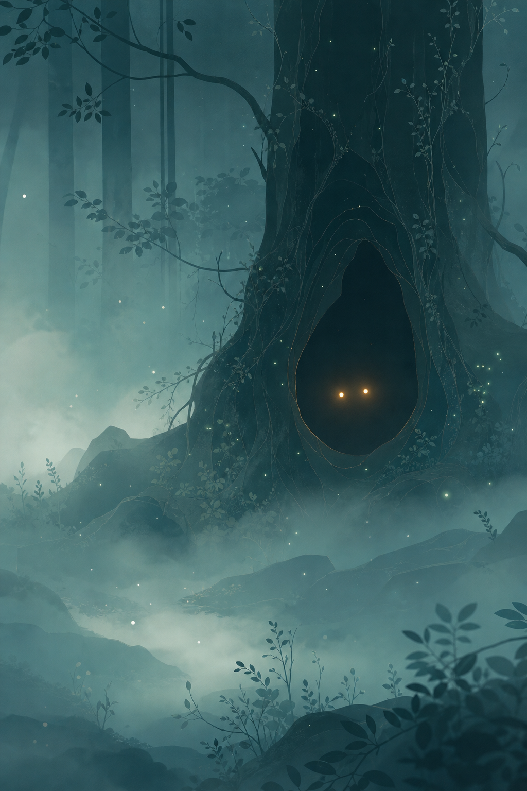
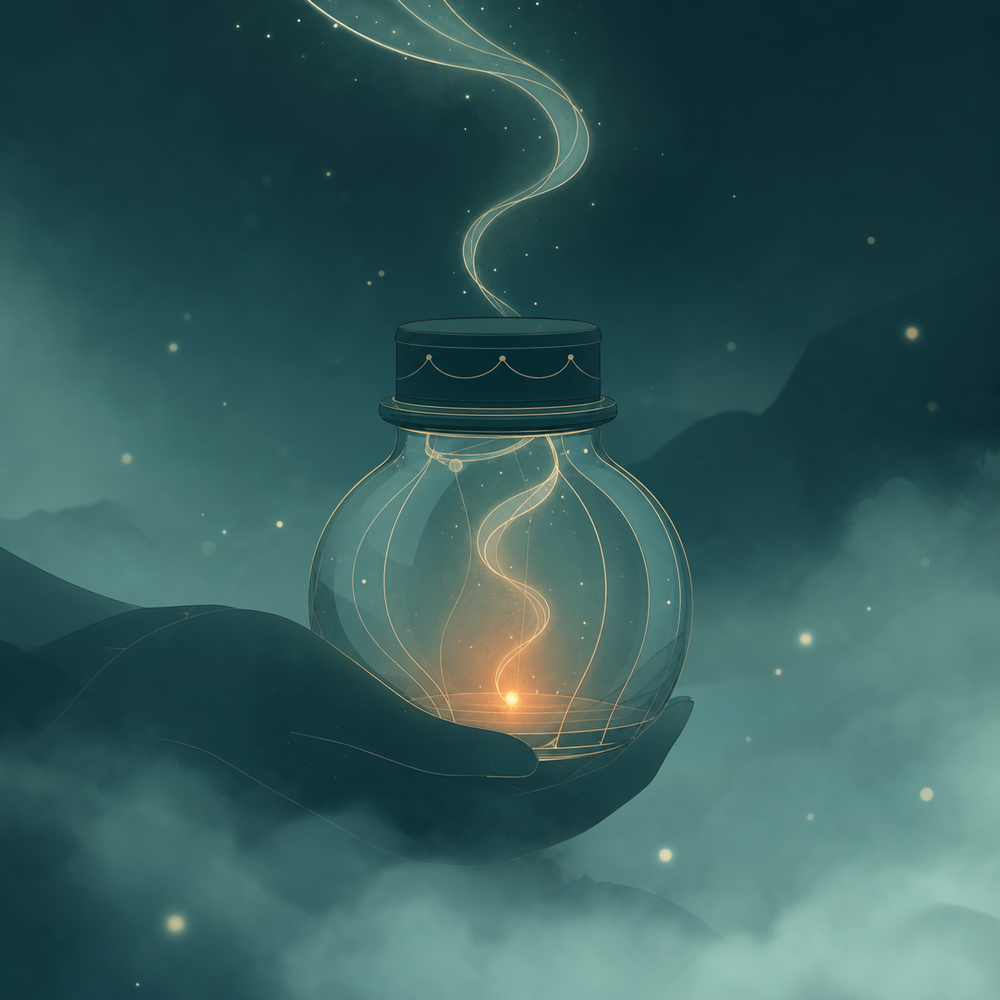
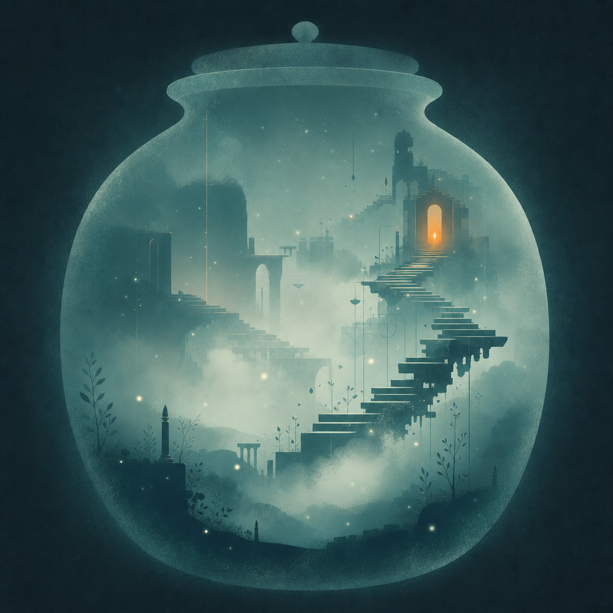
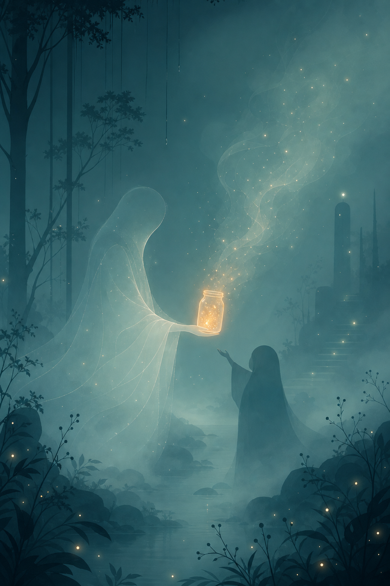
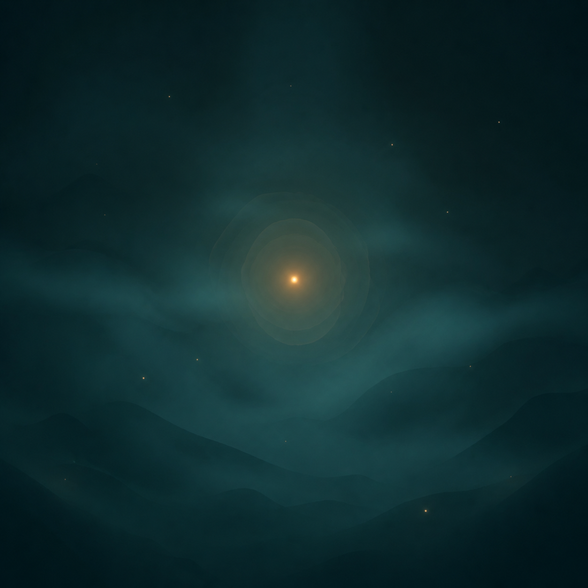

第一幕
MVP
入梦
Entering the Dream
第一视角穿过树叶林，
尽头白光闪屏，抵达异世界。

Verdant Mirage · Visual Gallery
森林的雾还未散，都还来得及。

Entering the Dream
第一视角穿过树叶林，
尽头白光闪屏，抵达异世界。

Meeting the Listener
场景中的非人倾听者现身、
无声问候——树洞深处的微光。

Recording the Dream
语音优先，怎么破碎都合法。
话语凝成容器里的光。

Dream Manifestation
梦境凝成一张画，
用选择共创——不必写 prompt。

The Return Ritual
数据主权即仪式——
留给森林 / 化作雾光 / 带走。

Falling Asleep
依据梦的内容生成助眠——
白噪音、呼吸光点、小故事。
放下手机，安心睡去。
Entering the Dream
第一视角穿过树叶林，尽头白光闪屏，抵达异世界。
🖼 视觉已呈现Meeting the Listener
非人倾听者现身、无声问候。永不下线，永不评判。
🖼 视觉已呈现Recording the Dream
语音优先 + 碎片文字 + 氛围印章。怎么破碎都合法。
🖼 视觉已呈现Weaving the Dream
Ullman 五阶段改编——倾听者以复述和轻提问帮梦者把梦织完整。
对话体验 · 无独立视觉Dream Manifestation
梦境凝成一张画。AI 异步生成 + 参考图锁风格 + 3 选 1 + 统一装裱。
🖼 视觉已呈现Continuing the Dream
IRT 重写游戏化——连环画选择式延伸。V2 登场。
⏳ V2 · 尚未显影Settling
环境化、可选、不说教。PFA 循证折中——雾变柔，光点聚拢。
氛围体验 · 无独立视觉The Return Ritual
留给森林 / 化作雾光 / 带走——梦的容器的三种归宿。
🖼 视觉已呈现Falling Asleep
白噪音、呼吸光点、小故事——每晚可以安心睡去的地方。
🖼 视觉已呈现